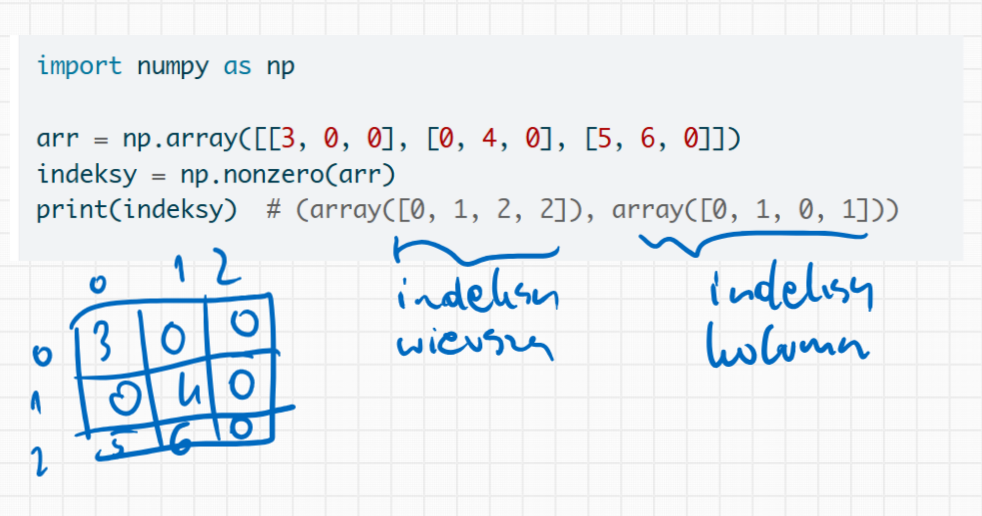
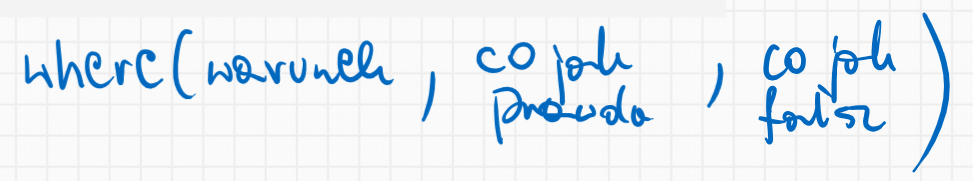
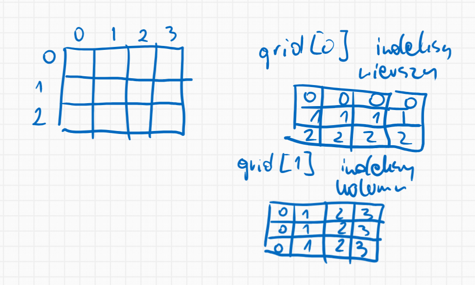

Funkcja nonzero()
Zwraca indeksy elementów niezerowych w tablicy. Wynik jest zwracany jako krotka tablic, po jednej dla każdego wymiaru tablicy.
import numpy as np= np.array([[3 , 0 , 0 ], [0 , 4 , 0 ], [5 , 6 , 0 ]])= np.nonzero(arr)print (indeksy) # (array([0, 1, 2, 2]), array([0, 1, 0, 1])) # Wydobycie wartości niezerowych = arr[indeksy]print (wartosci) # [3 4 5 6] # Alternatywnie można użyć: = np.argwhere(arr != 0 )print (indeksy_i_wartosci) # [[0 0] # [1 1] # [2 0] # [2 1]]
(array([0, 1, 2, 2]), array([0, 1, 0, 1]))
[3 4 5 6]
[[0 0]
[1 1]
[2 0]
[2 1]]

Funkcja where()
Zwraca elementy wybrane z x lub y w zależności od warunku. Jest to warunkowy selektor elementów.
import numpy as np# Zastąp wartości niedodatnie przez 0 = np.array([1 , - 2 , 3 , - 4 , 5 ])= np.where(arr > 0 , arr, 0 )print (wynik) # [1 0 3 0 5] # Zastosowanie w tablicy 2D = np.array([[1 , - 2 , 3 ], [- 4 , 5 , - 6 ]])= np.where(arr_2d < 0 , - 1 , arr_2d)print (wynik_2d)# [[ 1 -1 3] # [-1 5 -1]]
[1 0 3 0 5]
[[ 1 -1 3]
[-1 5 -1]]

Funkcje indices() i ix_()
indices()
Tworzy tablicę reprezentującą indeksy siatki.
import numpy as np# Tworzenie siatki indeksów 3x4 = np.indices((3 , 4 ))print (grid.shape) # (2, 3, 4) print (grid[0 ]) # indeksy wierszy # [[0 0 0 0] # [1 1 1 1] # [2 2 2 2]] print (grid[1 ]) # indeksy kolumn # [[0 1 2 3] # [0 1 2 3] # [0 1 2 3]]
(2, 3, 4)
[[0 0 0 0]
[1 1 1 1]
[2 2 2 2]]
[[0 1 2 3]
[0 1 2 3]
[0 1 2 3]]

ix_()
Konstruuje otwartą siatkę z wielu sekwencji, co jest przydatne do indeksowania wielowymiarowego.
import numpy as np= np.array([0 , 1 , 2 ])= np.array([3 , 4 , 5 , 6 ])= np.ix_(x, y)# Tworzy indeksy dla wszystkich kombinacji (0,3), (0,4), ..., (2,6) print (indeksy[0 ].shape, indeksy[1 ].shape) # (3, 1) (1, 4) # Użycie do wybierania podtablicy = np.arange(16 ).reshape(4 , 4 )print (arr)# [[ 0 1 2 3] # [ 4 5 6 7] # [ 8 9 10 11] # [12 13 14 15]] = arr[np.ix_([0 , 2 , 3 ], [0 , 2 ])]print (podtablica)# [[ 0 2] # [ 8 10] # [12 14]]
(3, 1) (1, 4)
[[ 0 1 2 3]
[ 4 5 6 7]
[ 8 9 10 11]
[12 13 14 15]]
[[ 0 2]
[ 8 10]
[12 14]]
ogrid i operacje na siatkach
ogrid pozwala na tworzenie otwartych siatek, co jest pamięciowo wydajniejsze niż pełne siatki.
import numpy as np# Siatka punktów w zakresie od -2 do 2 z krokiem 0.1 = np.ogrid[- 2 :2 :0.1 , - 2 :2 :0.1 ]= x** 2 + y** 2 <= 1 # Okrąg o promieniu 1 print (maska.shape) # (40, 40)
Funkcje ravel_multi_index() i unravel_index()
Te funkcje konwertują między indeksami wielowymiarowymi a płaskimi.
import numpy as np# Konwersja indeksów wielowymiarowych na płaskie = np.array([[0 , 0 ], [1 , 1 ], [2 , 1 ]])= (3 , 3 )= np.ravel_multi_index(indeksy_wielo.T, wymiary)print (indeksy_plaskie) # [0 4 7] # Konwersja indeksów płaskich na wielowymiarowe = np.array([0 , 3 , 8 ])= (3 , 3 )= np.unravel_index(indeksy_plaskie, ksztalt)print (indeksy_wielo) # (array([0, 1, 2]), array([0, 0, 2]))
[0 4 7]
(array([0, 1, 2]), array([0, 0, 2]))
Indeksy diagonalne
NumPy oferuje wiele funkcji do pracy z diagonalami macierzy.
import numpy as np# Uzyskanie indeksów głównej przekątnej = 4 = np.diag_indices(n)print (indeksy_diag) # (array([0, 1, 2, 3]), array([0, 1, 2, 3])) # Zastosowanie do ustawienia głównej przekątnej = np.zeros((4 , 4 ))= 1 # Ustawienie jedynek na głównej przekątnej print (arr)# [[1. 0. 0. 0.] # [0. 1. 0. 0.] # [0. 0. 1. 0.] # [0. 0. 0. 1.]] # Uzyskanie indeksów z istniejącej tablicy = np.ones((3 , 3 ))= np.diag_indices_from(arr2)print (indeksy_diag2)
(array([0, 1, 2, 3]), array([0, 1, 2, 3]))
[[1. 0. 0. 0.]
[0. 1. 0. 0.]
[0. 0. 1. 0.]
[0. 0. 0. 1.]]
(array([0, 1, 2]), array([0, 1, 2]))
3.1 Funkcja take()
Pobiera elementy z tablicy wzdłuż określonej osi na podstawie indeksów.
import numpy as np= np.array([10 , 20 , 30 , 40 , 50 ])= np.array([0 , 2 , 4 ])= np.take(arr, indeksy)print (wynik) # [10 30 50] # W tablicach wielowymiarowych możemy wybrać oś = np.array([[1 , 2 , 3 ], [4 , 5 , 6 ], [7 , 8 , 9 ]])= np.array([0 , 2 ])= np.take(arr_2d, indeksy_wierszy, axis= 0 )print (wynik_2d)# [[1 2 3] # [7 8 9]]
[10 30 50]
[[1 2 3]
[7 8 9]]
##Funkcja take_along_axis()
Pobiera wartości z tablicy poprzez dopasowanie 1D indeksu i fragmentów danych. Jest bezpieczna dla duplikatów indeksów.
import numpy as np= np.array([[10 , 30 , 20 ], [60 , 40 , 50 ]])= np.argsort(arr, axis= 1 )= np.take_along_axis(arr, indeksy_kolejnosc, axis= 1 )print (wynik)# [[10 20 30] # [40 50 60]]
Funkcja choose()
Konstruuje tablicę wybierając elementy z listy tablic.
import numpy as np= [np.array([0 , 1 , 2 , 3 ]),10 , 11 , 12 , 13 ]),20 , 21 , 22 , 23 ])]= np.array([0 , 2 , 1 , 0 ]) # Wybiera z której tablicy opcji wziąć element = np.choose(indeksy, opcje)print (wynik) # [ 0 21 12 3]
Funkcja compress()
Zwraca wybrane elementy tablicy wzdłuż określonej osi.
import numpy as np= np.array([[1 , 2 , 3 ], [4 , 5 , 6 ]])= np.array([True , False , True ])= np.compress(maska, arr, axis= 1 )print (wynik)# [[1 3] # [4 6]]
Funkcje diag() i diagonal()
Funkcje do pracy z przekątnymi.
import numpy as np# Tworzenie tablicy diagonalnej = np.diag([1 , 2 , 3 , 4 ])print (diag_arr)# [[1 0 0 0] # [0 2 0 0] # [0 0 3 0] # [0 0 0 4]] # Pobieranie diagonali z tablicy = np.array([[1 , 2 , 3 ], [4 , 5 , 6 ], [7 , 8 , 9 ]])= np.diag(arr)print (diag) # [1 5 9] # Pobieranie przekątnej przesuniętej o 1 = np.diagonal(arr, offset= 1 )print (diag_offset) # [2 6]
[[1 0 0 0]
[0 2 0 0]
[0 0 3 0]
[0 0 0 4]]
[1 5 9]
[2 6]
Funkcja select()
Zwraca tablicę zbudowaną z elementów z listy opcji, w zależności od warunków.
import numpy as np= np.array([[1 , 2 , 3 ], [4 , 5 , 6 ], [7 , 8 , 9 ]])= [arr < 3 , arr < 6 , arr < 9 ]= [100 , 200 , 300 ]= np.select(warunki, opcje, default= 400 )print (wynik)# [[100 100 200] # [200 200 300] # [300 300 400]]
[[100 100 200]
[200 200 300]
[300 300 400]]
Funkcja place()
Zmienia elementy tablicy na podstawie maski i podanych wartości.
import numpy as np= np.arange(5 )= np.array([True , False , True , False , True ])- 1 , - 2 , - 3 ]) # Cyklicznie używa wartości [-1, -2, -3] print (arr) # [-1 1 -2 3 -3]
Funkcja put()
Zastępuje określone elementy tablicy podanymi wartościami.
import numpy as np= np.arange(5 )= [0 , 2 , 4 ]10 , 20 , 30 ])print (arr) # [10 1 20 3 30]
Funkcja put_along_axis()
Umieszcza wartości w tablicy docelowej, dopasowując 1D indeks i fragmenty danych wzdłuż określonej osi.
import numpy as np= np.array([[10 , 30 , 20 ], [60 , 40 , 50 ]])= np.argmin(arr, axis= 1 )= np.expand_dims(indeksy, axis= 1 ) # Przekształć do kształtu (2, 1) 99 , axis= 1 )print (arr)# [[99 30 20] # [60 40 99]]
Funkcja putmask()
Zmienia elementy tablicy na podstawie warunku i podanych wartości.
import numpy as np= np.arange(5 )= np.array([True , False , True , False , True ])- 1 , - 2 , - 3 ]) # Cyklicznie używa wartości print (arr) # [-1 1 -2 3 -3]
Funkcja fill_diagonal()
Wypełnia główną przekątną tablicy podaną wartością.
import numpy as np= np.zeros((4 , 4 ))5 )print (arr)# [[5. 0. 0. 0.] # [0. 5. 0. 0.] # [0. 0. 5. 0.] # [0. 0. 0. 5.]] = np.zeros((4 , 4 , 4 ))9 )print (arr_rect[0 ]) # Wypełnia przekątną w każdym "plasterku" 3D tablicy
[[5. 0. 0. 0.]
[0. 5. 0. 0.]
[0. 0. 5. 0.]
[0. 0. 0. 5.]]
[[9. 0. 0. 0.]
[0. 0. 0. 0.]
[0. 0. 0. 0.]
[0. 0. 0. 0.]]